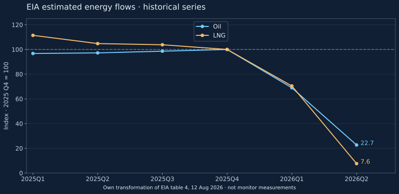

A political announcement, an observed voyage and the volume of energy transported answer different questions. An evidence matrix and a dated historical comparison prevent an ambiguous closure label.
A commercial corridor can deteriorate without becoming physically impassable to every vessel. A documented complete transit contradicts an absolute claim that passage was impossible at that time on that route. It does not establish predictable access for every flag, cargo or operator.
Three claims require different evidence
| Claim | Evidence needed | Insufficient on its own |
|---|---|---|
| Declared closure | Original statement, speaker, date and scope | A headline without an attributable statement |
| Observed physical passage | Complete voyage, date and traceable maritime source | A single AIS position or an anchored vessel |
| Normal or severely restricted operation | Comparable flow, access, delay and risk series | One voyage or a lower oil price |
This matrix structures research. It is not a navigation notice and does not change the monitor's classification. Statements remain attributed, and an absence of transit reporting is not treated as proof of a blockade.
An energy comparison with dates and units
The EIA security supplement released on 12 August 2026 estimates Hormuz oil flows at 21.6 million barrels per day in 2025 Q4 and 4.9 in 2026 Q2. Its LNG estimates are 10.5 and 0.8 billion cubic feet per day. These are published quarterly estimates, not our own measurements or a current traffic reading.

Our period-to-period calculation is (4.9 ÷ 21.6 − 1) × 100 = −77.3% for oil and (0.8 ÷ 10.5 − 1) × 100 = −92.4% for LNG. Indexing makes relative changes visible across different units. It does not create a combined measure of lost energy or estimate a price effect.
Quarterly averages can hide very different daily conditions. A positive estimate neither identifies individual transits nor establishes normal operation. The table alone also cannot assign the reduction to a particular cause.
What the comparison adds
Passage and substantial commercial disruption can coexist. “Open” alone may imply normality; “closed” alone may imply that no voyage is possible. A useful assessment therefore pairs a label with dated evidence, scope and limitations.
The V7 records examined in the archive draft contain no numeric traffic ratios. We do not fill those fields with EIA quarterly estimates: the frequencies differ and an aggregate estimate cannot automatically validate each monitor decision.
Use in economic analysis
Physical exposure, replacement cost and duration need separate investigation. A delayed cargo is not necessarily a lost cargo; a technically available route may still be difficult to insure. These possibilities help define what to monitor in inventories, contracts and maritime notices. They do not turn a historical flow decline into a forecast of Spanish fuel prices or inflation.
The original contributions are the evidence matrix, calculated indices and explicit connection between their limitations. The input CSV makes the arithmetic reproducible. Source: EIA Global Energy Security Data, table 4, 12 August 2026. Only published estimates are reused; no underlying Vortexa positions or third-party photographs are distributed.